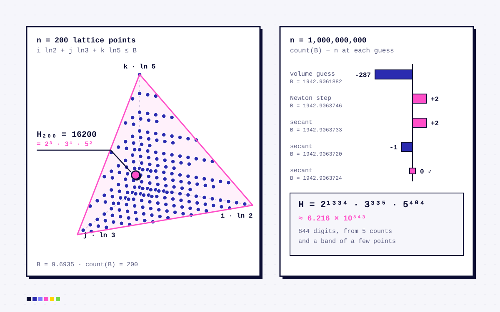

Home / Workshop / Logarithmic-Hamming-Numbers
Algorithms
NEWLogarithmic-Hamming-Numbers
Finds the nth Hamming number, 2ⁱ·3ʲ·5ᵏ, by counting lattice points under a plane in log space, instead of generating every number before it. The billionth, all 844 digits, takes about a second.

A Hamming number is a positive integer with no prime factors other than 2, 3 and 5: H = 2i · 3j · 5k. The classic way to find the nth one is Dijkstra’s three-pointer method, which builds the whole sequence in order. That’s fine for n in the thousands, but it takes O(n) time and memory, so the billionth is out of reach.
This takes a geometric route instead. Taking logs turns the product into a sum, i ln 2 + j ln 3 + k ln 5 ≤ B, so the Hamming numbers up to some bound are exactly the integer points inside a tetrahedron. Finding the nth one means finding the B with exactly n points under it. Counting them loops over j and k and gets the number of valid i with one division, so each count costs O(n2/3).
The bound starts from the tetrahedron’s volume, takes one Newton step using the volume’s derivative as the slope, and then switches to the secant method on the real counts. Because the count is a step function, it brackets the answer in a narrow band, lists the few points inside it, sorts them and picks the right one.
Highlights
- A volume estimate, one Newton step and the secant method usually land on the bound in a handful of counts
- Constant-time counting along each row of the lattice, with a small epsilon guarding against float rounding
- Only the points in the final band are ever turned into big integers, with powers of two done as bit shifts
- An interactive 3D Desmos graph of the tetrahedron and its lattice points
- Access
- public
- Year
- 2026
- Built with
- Python, Number theory, Desmos, Codewars